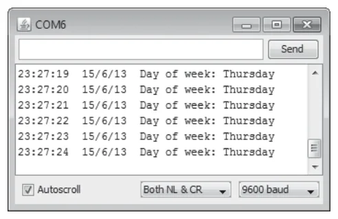

In this project you’ll learn how to set the time and date on the RTC and then retrieve and display it in the Serial Monitor. Time and date information can be useful for various types of projects, such as temperature loggers and alarm clocks.
The Hardware
Here’s what you’ll need to create this project:
- Arduino and USB cable
- Various connecting wires
- Maxim DS3232 RTC module
The Sketch
Connect the module to the Arduino as described earlier in the chapter, and then enter but do not upload the following sketch:
// Project 57 - Adding and Displaying Time and Date with an RTC
❶ #include "Wire.h"
#define DS3232_I2C_ADDRESS 0x68
// Convert normal decimal numbers to binary coded decimal
❷ byte decToBcd(byte val)
{
return( (val/10*16) + (val%10) );
}
// Convert binary coded decimal to normal decimal numbers
byte bcdToDec(byte val)
{
return( (val/16*10) + (val%16) );
}
void setup()
{
Wire.begin();
Serial.begin(9600);
// set the initial time here:
// DS3232 seconds, minutes, hours, day, date, month, year
❸ setDS3232time(0, 56, 23, 3, 30, 10, 12);
}
❹ void setDS3232time(byte second, byte minute, byte hour, byte dayOfWeek, byte
dayOfMonth, byte month, byte year)
{
// sets time and date data to DS3232
Wire.beginTransmission(DS3232_I2C_ADDRESS);
Wire.write(0); // set next input to start at the seconds register
Wire.write(decToBcd(second)); // set seconds
Wire.write(decToBcd(minute)); // set minutes
Wire.write(decToBcd(hour)); // set hours
Wire.write(decToBcd(dayOfWeek)); // set day of week (1=Sunday, 7=Saturday)
Wire.write(decToBcd(dayOfMonth)); // set date (1 to 31)
Wire.write(decToBcd(month)); // set month
Wire.write(decToBcd(year)); // set year (0 to 99)
Wire.endTransmission();
}
❺ void readDS3232time(byte *second,
byte *minute,
byte *hour,
byte *dayOfWeek,
byte *dayOfMonth,
byte *month,
byte *year)
{
Wire.beginTransmission(DS3232_I2C_ADDRESS);
Wire.write(0); // set DS3232 register pointer to 00h
Wire.endTransmission();
Wire.requestFrom(DS3232_I2C_ADDRESS, 7);
// request seven bytes of data from DS3232 starting from register 00h
*second = bcdToDec(Wire.read() & 0x7f);
*minute = bcdToDec(Wire.read());
*hour = bcdToDec(Wire.read() & 0x3f);
*dayOfWeek = bcdToDec(Wire.read());
*dayOfMonth = bcdToDec(Wire.read());
*month = bcdToDec(Wire.read());
*year = bcdToDec(Wire.read());
}
void displayTime()
{
byte second, minute, hour, dayOfWeek, dayOfMonth, month, year;
// retrieve data from DS3232
❻ readDS3232time(&second, &minute, &hour, &dayOfWeek, &dayOfMonth, &month,
&year);
// send it to the serial monitor
Serial.print(hour, DEC);
// convert the byte variable to a decimal number when displayed
Serial.print(":");
if (minute<10)
{
Serial.print("0");
}
Serial.print(minute, DEC);
Serial.print(":");
if (second<10)
{
Serial.print("0");
}
Serial.print(second, DEC);
Serial.print(" ");
Serial.print(dayOfMonth, DEC);
Serial.print("/");
Serial.print(month, DEC);
Serial.print("/");
Serial.print(year, DEC);
Serial.print(" Day of week: ");
switch(dayOfWeek){
case 1:
Serial.println("Sunday");
break;
case 2:
Serial.println("Monday");
break;
case 3:
Serial.println("Tuesday");
break;
case 4:
Serial.println("Wednesday");
break;
case 5:
Serial.println("Thursday");
break;
case 6:
Serial.println("Friday");
break;
case 7:
Serial.println("Saturday");
break;
}
}
void loop()
{
displayTime(); // display the real-time clock data on the Serial Monitor,
delay(1000); // every second
}How It Works
This sketch might look complex, but it’s really not so difficult. At ❶, we import the I2C library and set the bus address of the RTC in the sketch as 0x68. At ❷, two custom functions convert decimal numbers to binarycoded decimal (BCD) values and return those values. We perform these conversions because the DS3232 stores values in BCD format.
At ❸, we use the function setDS3232time to pass the time and date information to the RTC IC like this:
setDS3232time( second , minute , hour , dayOfWeek , dayOfMonth , month , year )To use this function, simply insert the required data into the various parameters. The dayOfWeek parameter is a number between 1 and 7 representing Sunday through Saturday, respectively. The information for year is only two digits—for example, you’d use 13 for the year 2013. (The 20 is assumed.) You can insert either fixed values (as in this sketch) or byte variables that contain the parameters.
Thus, to set the time in the RTC, we enter the current date and time values into the setDS3232time function at ❹. Now you can upload the sketch. Having done that once, we comment out the function by placing // in front of the setDS3232time function at ❹, and then we re-upload the sketch to ensure that the time isn’t set to the original value every time the sketch starts!
Finally, the function readDS3232time at ❺ reads the time and date from the RTC and inserts the data into byte variables. This is used at ❻ inside the function displayTime, which simply retrieves the data and displays it in the Serial Monitor by printing the contents of the time variables.
Now upload your sketch and open the Serial Monitor. The results should look similar to those shown in Figure 18-2.

You can use the contents of the sketch for Project 57 as a basis for other time-related projects. The functions decToBcd, bcdToDec, readDS3232time, and setDS3232time can be inserted and thus reused in future projects. That’s one of the benefits of using the Arduino platform: Once you write a useful procedure, it can often be reused later with little or no modification.